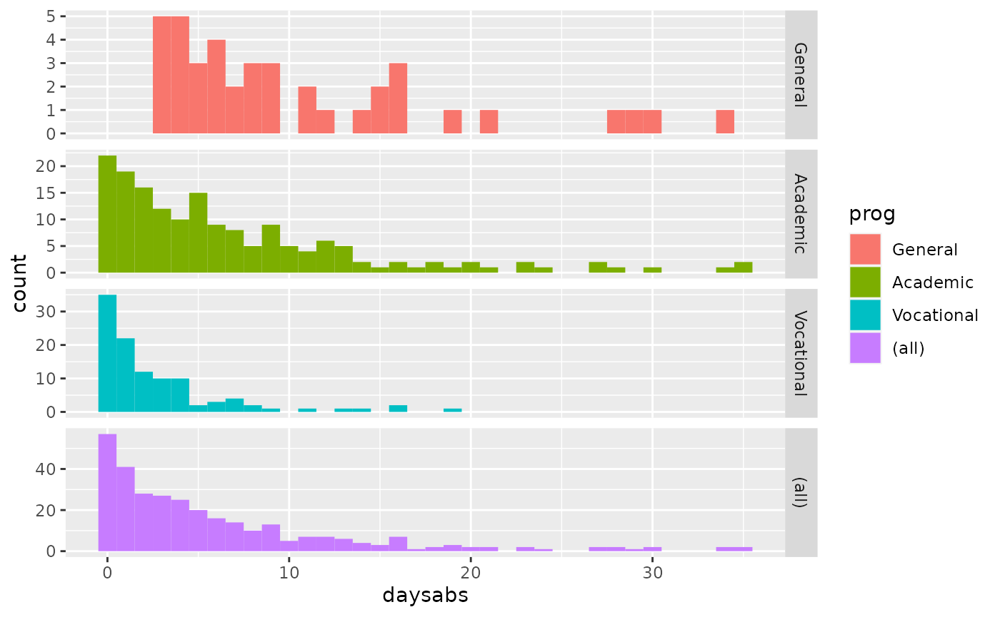
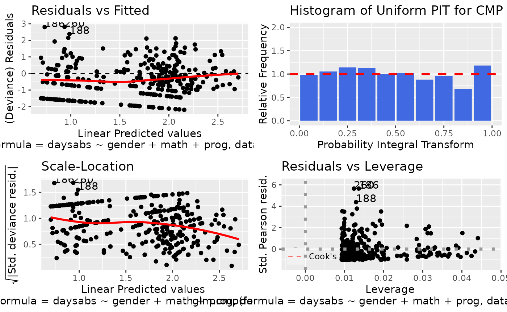
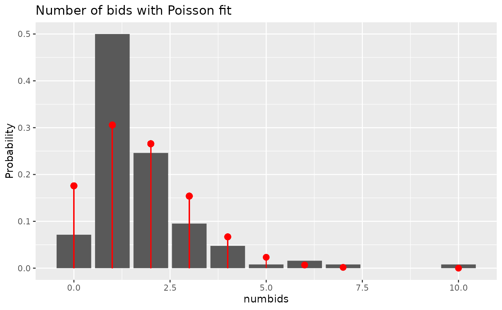

mpcmp packagevignettes/mpcmp.Rmd
mpcmp.RmdConway–Maxwell–Poisson (CMP or COM-Poisson) distributions have seen a recent resurgence in popularity for the analysis of dispersed counts (e.g., Shmueli et al. (2005); Lord, Guikema, and Geedipally (2008); Lord, Geedipally, and Guikema (2010); Sellers and Shmueli (2010); Sellers and Premeaux (2020)). Key features of CMP distributions include the ability to handle both over- and under-dispersion while containing the classical Poisson distribution as a special case. See the corresponding Wikipedia page for a quick summary or Shmueli et al. (2005) for a more detailed overview of the history, features and applications of CMP distributions.
The R (R Core Team (2020)) mpcmp package of Fung et al. (2020) provides the functionality for estimating a mean-parametrized Conway-Maxwell-Poisson generalized linear models for dispersed count data. The package is available from the Comprehensive R Archive Network (CRAN) here. Huang (2017) provides the theoretical development of the model that this package bases on.
The CMP distribution was first used by Conway and Maxwell (1962) as a model for a queuing system with dependent service times. A random variable is said to have a (standard) CMP distribution with rate parameter \(\lambda\) and dispersion parameter \(\nu\) if its probability mass function (pmf) is given by \[ P(Y =y|\lambda,\nu)= \frac{\lambda^y}{(y!)^{\nu}}\frac{1}{Z(\lambda,\nu)}, \quad y =0,1,2,..., \] where \[ Z(\lambda,\nu)= \sum^{\infty}_{y=0}\frac{\lambda^y}{(y!)^{\nu}}, \] is a normalizing constant. The CMP includes Poisson (\(\nu = 1\)), geometric (\(\nu = 0\), \(\lambda < 1\)) and Bernoulli (\(\nu \to \infty\) with probability \(\lambda/(1+\lambda)\)) as its special cases.
One of the major limitations of CMP distributions is that it is not directly parametrized via the mean as it does not have closed-form expression for its moments in terms of the parameters \(\lambda\) and \(\nu\). For the first two moments, approximations can be obtained as \[ \begin{aligned} E(Y) &\approx \lambda^{\frac{1}{\nu}}-\frac{\nu-1}{2\nu}\quad \text{and} \quad Var(Y) \approx \frac{1}{\nu}E(Y), \end{aligned} \] and they can be particularly accurate for \(\nu\leq 1\) or \(\lambda>10^{\nu}\) (see Shmueli et al. (2005)). If \(\nu < 1\), CMP is overdispersed. In reverse, CMP is underdispersed when \(\nu>1\). Here is a plot of the density for a few CMP distributions with mean \(\mu = 5\):
As CMP is one of a few distributions that can handle both under- and over-dispersion, the aim is to extend the GLM formulation to the CMP case so that one can model the relationship between \(Y\) and the predictors \(X\). Given a set of covariates \(X \in R^q\), Sellers and Shmueli (2010) proposed a GLM for count response \(Y\) that can be specified via \[ Y|X ∼ CMP(\lambda,\nu), \quad \text{s.t.} \quad \log\lambda = X^{\top}\beta \] where \(\beta \in R^q\) is a vector of regression coefficients. This model, however, does not provide a closed-form relationship between \(E(Y)\) and the linear predictor, making it incompatible with other commonly used log-linear models.
As it is more convenient and interpretable to model the mean \(\mu = E(Y)>0\) of the distribution directly, Huang (2017) proposed to parametrize the CMP distribution via the mean: \[ P(Y = y|\mu, \nu) = \frac{\lambda(\mu,\nu)^{y}}{(y!)^{\nu}}\frac{1}{Z(\lambda(\mu,\nu),\nu)}, \quad y = 0,1,2,\ldots, \] where the rate \(\lambda(\mu,\nu)\) is defined as the solution to the mean constraint: \[ \mu= \sum^{\infty}_{y=0} y\frac{\lambda^y}{(y!)^{\nu}}\frac{1}{Z(\lambda,\nu)}. \] We shall denote this as CMP\(_{\mu}(\mu, \nu)\) distribution to distinguish it from the original/standard one.
A GLM that based on CMP\(_{\mu}\) can then be specified via \[ Y|X ∼ CMP_{\mu}(\mu(X^{\top}\beta),\nu), \] where \[ E(Y|X) = \mu(X^{\top}\beta) = \exp(X^{\top}\beta). \] Note that GLM that based on CMP\(_{\mu}\) is a genuine GLM, so all the familiar key features of GLMs (e.g., McCullagh and Nelder (1989), Chapter 2) are retained.
The mean-dispersion specification makes CMP\(_{\mu}\) directly comparable and compatible other commonly used log-linear regression models for counts. In particular, the mean \(\mu = \exp(X^{\top}\beta)\) is functionally independent of the dispersion parameter \(\nu\), making it similar in structure to the familiar Negative Binomial regression model for overdispersed counts.
The model can also be extended to allow varying dispersion, i.e. \(\nu\) itself is modelled via a regression: \[ \nu = \exp(\tilde{X}^{\top}\gamma), \] where \(\tilde{X}\) is some covariates.
mpcmp packageThe main modelling function in our mpcmp package is glm.cmp(). The optimisation is done using Fisher Scoring updates to take advantage of the fact the CMP\(_{\mu}\) belongs to the exponential family. Notice that this is a constrained optimisation problem as we have to maintain mean constraints at all times, which makes the implementation is a bit more challenging.
The package implements similar methods to those related to glm objects. If you used glm() previously, you should feel right at home. Once a fitted model object has been obtained, there are assessor functions available to extract the coefficients (coef(), or its alias coefficients()), the fitted values (fitted() or its alias fitted.values()), the residuals (residuals() or its alias resid()), the model frame (model.frame()), the number of observations (nobs()), the log-likelihood (logLik()), and the AIC (AIC()).
You can also use plot() or autoplot() to obtain diagnostic plots of the fitted model.
Let’s go through some examples to show you what our package can do!
attendance
The attendance dataset (originally from https://stats.idre.ucla.edu/r/dae/negative-binomial-regression/) examines the relationship between the number of days absent from school and the gender, maths score and academic program of 314 students from two urban high schools.
library(mpcmp)
data(attendance)
library(ggplot2)
ggplot(attendance, aes(daysabs, fill = prog)) + geom_histogram(binwidth = 1) +
facet_grid(prog ~ ., margins = TRUE, scales = "free")
It appears students enrolled into the General program tend to miss more days of school than those enrolled into the Academic or the Vocational program. There is some overdispersion in this dataset. We can use glm.cmp() to fit the mean-parametrized CMP model to try to account for that overdispersion.
M.attendance <- glm.cmp(daysabs~ gender+math+prog, data=attendance)
summary(M.attendance)
#>
#> Call: glm.cmp(formula = daysabs ~ gender + math + prog, data = attendance)
#>
#> Deviance Residuals:
#> Min 1Q Median 3Q Max
#> -2.1925 -1.1166 -0.3973 0.2964 2.8154
#>
#> Linear Model Coefficients:
#> Estimate Std.Err Z value Pr(>|z|)
#> (Intercept) 2.714645 0.190407 14.257 < 2e-16 ***
#> gendermale -0.214720 0.117148 -1.833 0.06682 .
#> math -0.006323 0.002386 -2.650 0.00804 **
#> progAcademic -0.425322 0.169525 -2.509 0.01211 *
#> progVocational -1.253896 0.189478 -6.618 3.65e-11 ***
#> ---
#> Signif. codes: 0 '***' 0.001 '**' 0.01 '*' 0.05 '.' 0.1 ' ' 1
#>
#> (Dispersion parameter for Mean-CMP estimated to be 0.02024)
#>
#>
#> Null deviance: 455.83 on 313 degrees of freedom
#> Residual deviance: 377.44 on 309 degrees of freedom
#>
#> AIC: 1739.026As mpcmp is directly comparable and compatible with other commonly used log-linear regression models for counts, interpreting parameters is straight forward. Our model estimates that students in the General program (the reference level) are expected to miss exp(+1.254) = 3.5 times more days of school compared to students in the Vocational program.
To see whether a simpler Poisson model, i.e. \(\nu = 1\) is adequate, we can run the model through the LRTnu() function:
LRTnu(M.attendance)
#>
#> Likelihood ratio test for testing nu=1:
#>
#> Log-Likelihood for Mean-CMP(0.0202406): -864
#> Log-Likelihood for Poisson: -1320
#> LRT-statistic: 903
#> Chi-sq degrees of freedom: 1
#> P-value: < 2e-16As the P-value is small, we conclude that dispersion is present in this data set.
One of the key features of the mpcmp package is that it provides a range of diagnostic plots.
autoplot(M.attendance)
Please refer to ?autoplot to see what diagnostic plots are available for a cmp class object.
The mpcmp package also supports broom tidier method.
tidy(M.attendance)
#> # A tibble: 5 x 5
#> term estimate std.error statistic p.value
#> <chr> <dbl> <dbl> <dbl> <dbl>
#> 1 (Intercept) 2.71 0.190 14.3 4.05e-46
#> 2 gendermale -0.215 0.117 -1.83 6.68e- 2
#> 3 math -0.00632 0.00239 -2.65 8.04e- 3
#> 4 progAcademic -0.425 0.170 -2.51 1.21e- 2
#> 5 progVocational -1.25 0.189 -6.62 3.65e-11This means “cmp” objects can take advantage of any packages that required broom support such as the modelsummary package:
M_poisson <- glm(daysabs~ gender+math+prog, data=attendance, family = poisson)
M_nb <- MASS::glm.nb(daysabs~ gender+math+prog, data=attendance)
modelsummary::modelsummary(list(mpcmp = M.attendance,
Poisson = M_poisson,
Neg.Bin = M_nb))| mpcmp | Poisson | Neg.Bin | |
|---|---|---|---|
| (Intercept) | 2.715 | 2.759 | 2.707 |
| (0.190) | (0.064) | (0.204) | |
| gendermale | -0.215 | -0.242 | -0.211 |
| (0.117) | (0.047) | (0.122) | |
| math | -0.006 | -0.007 | -0.006 |
| (0.002) | (0.001) | (0.002) | |
| progAcademic | -0.425 | -0.426 | -0.425 |
| (0.170) | (0.057) | (0.182) | |
| progVocational | -1.254 | -1.271 | -1.253 |
| (0.189) | (0.078) | (0.200) | |
| Num.Obs. | 314 | 314 | 314 |
| AIC | 1739.0 | 2640.2 | 1740.3 |
| BIC | 1761.5 | 2658.9 | 1762.8 |
| Log.Lik. | -863.513 | -1315.089 | -864.154 |
We also implemented a bunch of commonly used methods for “cmp” objects:
methods(class = "cmp")
#> [1] AIC augment autoplot coef confint
#> [6] cooks.distance fitted glance hatvalues influence
#> [11] logLik model.frame model.matrix nobs plot
#> [16] predict print residuals rstandard summary
#> [21] tidy update vcov
#> see '?methods' for accessing help and source codetakeoverbids
One of the key strength of the CMP distribution is that it can handle underdispersion. Here is an example demonstrating that. A dataset from Cameron and Johansson (1997) that gives the number of bids received by 126 US firms that were successful targets of tender offers during the period 1978-85. The dataset comes with a set of explanatory variables such as defensive actions taken by management of target firm, firm-specific characteristics and intervention by federal regulators.
If we fit a Poisson distribution to the marginal distribution of the number of bids, we have:
data("takeoverbids")
ggplot(takeoverbids) +
geom_bar(aes(x= numbids, y = ..count../sum(..count..)))+
geom_pointrange(aes(x = numbids,
y = dpois(numbids, mean(numbids)),
ymin = 0,
ymax = dpois(numbids, mean(numbids))),
colour = "red") +
labs(title = "Number of bids with Poisson fit", y = "Probability") We can see that the response variable is more concentrated than a Poisson fit, which is a sign of underdispersion.
Here, we can use glm.cmp() to fit the mean-parametrized CMP model to try to account for that underdispersion.
M.bids <- glm.cmp(numbids ~ leglrest + rearest + finrest + whtknght
+ bidprem + insthold + size + sizesq + regulatn, data=takeoverbids)
tidy(M.bids)
#> # A tibble: 10 x 5
#> term estimate std.error statistic p.value
#> <chr> <dbl> <dbl> <dbl> <dbl>
#> 1 (Intercept) 0.990 0.435 2.27 0.0230
#> 2 leglrest 0.268 0.123 2.18 0.0292
#> 3 rearest -0.173 0.155 -1.12 0.263
#> 4 finrest 0.0677 0.174 0.388 0.698
#> 5 whtknght 0.481 0.132 3.65 0.000258
#> 6 bidprem -0.685 0.308 -2.23 0.0260
#> 7 insthold -0.368 0.347 -1.06 0.289
#> 8 size 0.179 0.0476 3.77 0.000166
#> 9 sizesq -0.00758 0.00248 -3.05 0.00228
#> 10 regulatn -0.0376 0.130 -0.288 0.773
LRTnu(M.bids)
#>
#> Likelihood ratio test for testing nu=1:
#>
#> Log-Likelihood for Mean-CMP(1.75214): -180
#> Log-Likelihood for Poisson: -185
#> LRT-statistic: 9.72
#> Chi-sq degrees of freedom: 1
#> P-value: 0.00182From the likelihood ratio test, we can see that the dispersion parameter is significantly different to 1, suggesting the model is trying to account for that underdispersion.
We can also compare the results with a Poisson model.
M.bids.pois <- glm(numbids ~ leglrest + rearest + finrest + whtknght
+ bidprem + insthold + size + sizesq + regulatn, data=takeoverbids,
family = poisson)
modelsummary::modelsummary(list(mpcmp = M.bids, Poisson = M.bids.pois),
statistic_vertical = FALSE, stars = TRUE)
#> Warning in sanity_ellipsis(vcov, ...): The `statistic_vertical` argument
#> is deprecated and will be ignored. To display uncertainty estimates next to
#> your coefficients, use a `glue` string in the `estimate` argument. See `?
#> modelsummary`
#> Warning: In version 0.8.0 of the `modelsummary` package, the default significance markers produced by the `stars=TRUE` argument were changed to be consistent with R's defaults.
#> This warning is displayed once per session.| mpcmp | Poisson | |
|---|---|---|
| (Intercept) | 0.990* | 0.986+ |
| (0.435) | (0.534) | |
| leglrest | 0.268* | 0.260+ |
| (0.123) | (0.151) | |
| rearest | -0.173 | -0.196 |
| (0.155) | (0.193) | |
| finrest | 0.068 | 0.074 |
| (0.174) | (0.217) | |
| whtknght | 0.481*** | 0.481** |
| (0.132) | (0.159) | |
| bidprem | -0.685* | -0.678+ |
| (0.308) | (0.377) | |
| insthold | -0.368 | -0.362 |
| (0.347) | (0.424) | |
| size | 0.179*** | 0.179** |
| (0.048) | (0.060) | |
| sizesq | -0.008** | -0.008* |
| (0.002) | (0.003) | |
| regulatn | -0.038 | -0.029 |
| (0.130) | (0.161) | |
| Num.Obs. | 126 | 126 |
| AIC | 382.2 | 389.9 |
| BIC | 413.4 | 418.3 |
| Log.Lik. | -180.088 | -184.948 |
| + p < 0.1, * p < 0.05, ** p < 0.01, *** p < 0.001 |
If we compare the two models, we can see that the CMP\(_{\mu}\) model fitted the data better. We can also see that all the estimated standard errors under CMP\(_{\mu}\) model are smaller which in turn makes the p-values for both leglrest and bidprem to drop below 0.05 instead of 0.1 under the Poisson model.
sitophilus
Ribeiro et al. (2013) carried out an experiment to assess the bioactivity of extracts from different parts (seeds, leaves and branches) of Annona mucosa (Annonaceae) to control Sitophilus zeamaus (Coleoptera: Curculionidae), a major pest of stored maize/corn in Brazil. This dataset can be found as part of the cmpreg package of Elias Ribeiro Junior (2020).
In this experiment:
library(tidyverse)
data(sitophilus)
sitophilus %>% group_by(extract) %>% summarise(mu = mean(ninsect),
sigma2 = var(ninsect))
#> # A tibble: 4 x 3
#> extract mu sigma2
#> <fct> <dbl> <dbl>
#> 1 Control 31.5 62.5
#> 2 Leaf 31.3 94.0
#> 3 Branch 29.9 88.8
#> 4 Seed 1.1 1.66It appears that the treatment may have some impact on both the mean and the variance of the number of progeny. Recall that non-constant variance is the norm in a GLM, non-constant variances do not necessarily mean varying dispersions. Nonetheless, we will try to use the treatment to explain the dispersion in the data set. To do that we specify the formula_nu argument in the glm.cmp() function.
data(sitophilus)
M.sit <- glm.cmp(formula = ninsect ~ extract, formula_nu = ~ extract, data = sitophilus)
summary(M.sit)
#>
#> Call: glm.cmp(formula = ninsect ~ extract, formula_nu = ~extract, data = sitophilus)
#>
#> Deviance Residuals:
#> Min 1Q Median 3Q Max
#> -2.21085 -1.16849 0.07494 0.64152 1.72653
#>
#> Mean Model Coefficients:
#> Estimate Std.Err Z value Pr(>|z|)
#> (Intercept) 3.449988 0.077974 44.245 <2e-16 ***
#> extractLeaf -0.006369 0.122139 -0.052 0.958
#> extractBranch -0.052129 0.123387 -0.422 0.673
#> extractSeed -3.354677 0.362108 -9.264 <2e-16 ***
#> ---
#> Signif. codes: 0 '***' 0.001 '**' 0.01 '*' 0.05 '.' 0.1 ' ' 1
#>
#> Dispersion Model Coefficients:
#> Estimate Std.Err Z value Pr(>|z|)
#> (Intercept) -0.6652 0.4573 -1.455 0.146
#> extractLeaf -0.3831 0.6509 -0.589 0.556
#> extractBranch -0.3724 0.6514 -0.572 0.567
#> extractSeed -0.1176 1.5461 -0.076 0.939
#>
#> Null deviance: 257.211 on 39 degrees of freedom
#> Residual deviance: 41.679 on 32 degrees of freedom
#>
#> AIC: 260.8279From the model summary, we can see that there is not much evidence to suggest the dispersions are varying across treatment groups. We can also formally test whether a constant dispersion model is sufficient here using a likelihood ratio test as the two models are nested:
M.sit2 <- update(M.sit, formula_nu = NULL)
cmplrtest(M.sit, M.sit2)
#>
#> Likelihood ratio test for testing both COM-Poisson models are equivalent
#> LRT-statistic: 0.439
#> Chi-sq degrees of freedom: 3
#> P-value: 0.932As a result, our final model is
summary(M.sit2)
#>
#> Call: glm.cmp(formula = ninsect ~ extract, data = sitophilus)
#>
#> Deviance Residuals:
#> Min 1Q Median 3Q Max
#> -1.9515 -1.2310 0.0794 0.6255 1.6762
#>
#> Linear Model Coefficients:
#> Estimate Std.Err Z value Pr(>|z|)
#> (Intercept) 3.449988 0.088455 39.003 <2e-16 ***
#> extractLeaf -0.006369 0.125289 -0.051 0.959
#> extractBranch -0.052129 0.126712 -0.411 0.681
#> extractSeed -3.354677 0.372197 -9.013 <2e-16 ***
#> ---
#> Signif. codes: 0 '***' 0.001 '**' 0.01 '*' 0.05 '.' 0.1 ' ' 1
#>
#> (Dispersion parameter for Mean-CMP estimated to be 0.3957)
#>
#>
#> Null deviance: 234.470 on 39 degrees of freedom
#> Residual deviance: 41.408 on 36 degrees of freedom
#>
#> AIC: 253.2668There are other R packages to deal with CMP models, and they all contribute to the writing and construction of this package.
compoisson: Routines for density and moments of the CMP distribution under original parametrization by Dunn (2012)
CompGLM: Fit CMP models under original parametrization (includes dispersion modelling) by Pollock (2018).COMPoissonReg: Fit CMP models under original parametrization (includes zero-inflation and dispersion modelling) by Andrew Raim <andrew.raim@gmail.com> (2019).cmpreg: Fit Mean-type parametrized CMP models (includes dispersion modelling) by Elias Ribeiro Junior (2020). The authors purposed to regress on the approximated mean.DGLMExtPois: Fit mean-parametrized CMP model (includes dispersion modelling) using nloptr by Saez-Castillo, Conde-Sanchez, and Martinez (2020).glmmTMB: Fit (among other) CMP models under a different mean-parametrization (includes zero-inflation, dispersion modelling and random effects) by Brooks et al. (2017).Andrew Raim <andrew.raim@gmail.com>, Kimberly Sellers Thomas Lotze <thomas.lotze@thomaslotze.com>. 2019. COMPoissonReg: Conway-Maxwell Poisson (Com-Poisson) Regression. https://CRAN.R-project.org/package=COMPoissonReg.
Brooks, Mollie E., Kasper Kristensen, Koen J. van Benthem, Arni Magnusson, Casper W. Berg, Anders Nielsen, Hans J. Skaug, Martin Maechler, and Benjamin M. Bolker. 2017. “glmmTMB Balances Speed and Flexibility Among Packages for Zero-Inflated Generalized Linear Mixed Modeling.” The R Journal 9 (2): 378–400. https://journal.r-project.org/archive/2017/RJ-2017-066/index.html.
Cameron, A. Colin, and Per Johansson. 1997. “Count data regression using series expansions: With applications.” Journal of Applied Econometrics 12 (3): 203–23. https://doi.org/10.1002/(SICI)1099-1255(199705)12:3<203::AID-JAE446>3.0.CO;2-2.
Conway, R. W., and W. L. Maxwell. 1962. “A queuing model with state dependent service rates.” New York :
Dunn, Jeffrey. 2012. Compoisson: Conway-Maxwell-Poisson Distribution. https://CRAN.R-project.org/package=compoisson.
Elias Ribeiro Junior, Eduardo. 2020. Cmpreg: Reparametrized Com-Poisson Regression Models.
Fung, Thomas, Aya Alwan, Justin Wishart, and Alan Huang. 2020. Mpcmp: Mean-Parametrizied Conway-Maxwell Poisson Regression. https://cran.r-project.org/web/packages/mpcmp/index.html.
Huang, Alan. 2017. “Mean-parametrized Conway–Maxwell–Poisson regression models for dispersed counts.” Statistical Modelling 17 (6): 359–80. https://doi.org/10.1177/1471082X17697749.
Lord, Dominique, Srinivas Reddy Geedipally, and Seth D. Guikema. 2010. “Extension of the application of conway-maxwell-poisson models: Analyzing traffic crash data exhibiting underdispersion.” Risk Analysis 30 (8): 1268–76. https://doi.org/10.1111/j.1539-6924.2010.01417.x.
Lord, Dominique, Seth D. Guikema, and Srinivas Reddy Geedipally. 2008. “Application of the Conway-Maxwell-Poisson generalized linear model for analyzing motor vehicle crashes.” Accident Analysis and Prevention 40 (3): 1123–34. https://doi.org/10.1016/j.aap.2007.12.003.
McCullagh, P., and J. A. Nelder. 1989. Generalized Linear Models, Second Edition. Chapman and Hall/Crc Monographs on Statistics and Applied Probability Series. Chapman & Hall. http://books.google.com/books?id=h9kFH2\_FfBkC.
Pollock, Jeffrey. 2018. CompGLM: Conway-Maxwell-Poisson Glm and Distribution Functions. https://CRAN.R-project.org/package=CompGLM.
R Core Team. 2020. R: A Language and Environment for Statistical Computing. Vienna, Austria: R Foundation for Statistical Computing. https://www.R-project.org/.
Ribeiro, Leandro do Prado, José Djair Vendramim, Keylla Utherdyany Bicalho, Moacir dos Santos Andrade, João Batista Fernandes, Rafael de Andrade Moral, and Clarice Garcia Borges Demétrio. 2013. “Annona mucosa Jacq. (Annonaceae): A promising source of bioactive compounds against Sitophilus zeamais Mots. (Coleoptera: Curculionidae).” Journal of Stored Products Research 55: 6–14. https://doi.org/10.1016/j.jspr.2013.06.001.
Saez-Castillo, Antonio Jose, Antonio Conde-Sanchez, and Francisco Martinez. 2020. DGLMExtPois: Double Generalized Linear Models Extending Poisson Regression. https://CRAN.R-project.org/package=DGLMExtPois.
Sellers, Kimberly F., and Bailey Premeaux. 2020. “Conway–Maxwell–Poisson Regression Models for Dispersed Count Data.” WIREs Computational Statistics, e1533. https://doi.org/10.1002/wics.1533.
Sellers, Kimberly F., and Galit Shmueli. 2010. “A flexible regression model for count data.” Annals of Applied Statistics 4 (2): 943–61. https://doi.org/10.1214/09-AOAS306.
Shmueli, G., T. P Minka, J. B Kadane, S. Borle, and P. Boatwright. 2005. “A useful distribution for fitting discrete data:revival of the conway-Maxwell_Poisson distribution.” Applied Statistics 54 (1): 127–42. https://doi.org/10.1111/j.1467-9876.2005.00474.x.